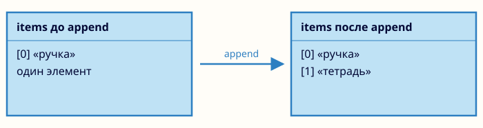
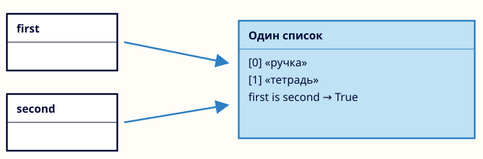
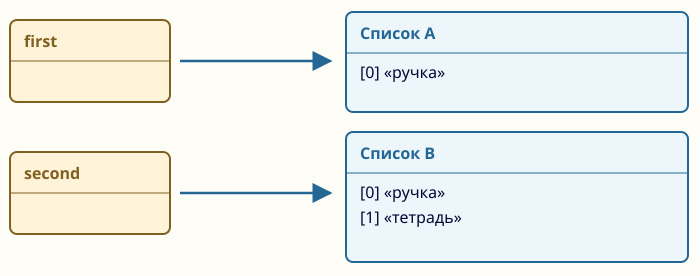
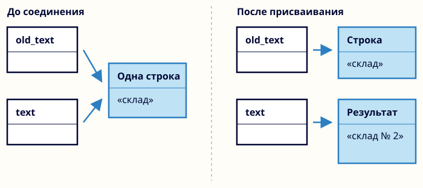
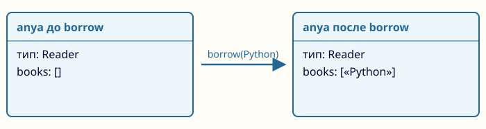

Глава 8.2
Объект: состояние и поведение
В этой главе на рисунках и программах показаны изменение объекта, общие ссылки и независимые данные. От списка книг читателя перейдём к правилам работы со списками и строками.
- Перед началом
- Списки, строки, присваивание; глава 8.1
- После главы
- Различать объект, его текущее состояние и имена со ссылками на него.
- Среда
- Python 3.11 и новее · самостоятельные примеры
- Основа
- Модуль 8 исходного справочника · с. 551
Как меняется состояние списка
В предыдущей главе выдача добавляла название в список книг читателя. Теперь отделим список от объекта Reader и рассмотрим само изменение. В этой главе разобраны состояние, общие ссылки и независимые объекты. Начнём со знакомого списка канцелярских принадлежностей.
Содержимое списка — его состояние. Операция добавления — часть его поведения. На рисунке показан один список до и после append. Названия items слева и справа обозначают его в разные моменты выполнения.

items = ["ручка"]
print(items)
items.append("тетрадь")
print(items)['ручка'] ['ручка', 'тетрадь']
Сначала список содержит одну строку. После вызова метода в нём две строки. Имя items по-прежнему ссылается на тот же список.
Справка по примеру
| Понятие | В примере |
|---|---|
| Состояние | Содержимое списка до и после append |
| Поведение | Операция append добавляет элемент |
| Идентичность | До и после изменения это один список |
Объекты встречаются ещё до объявления собственных классов: числа, строки, функции и списки тоже являются объектами. Для понимания изменений нужно отделить объект от его имени.
Имя хранит ссылку на объект
В первом опыте у списка было одно имя items. Во втором опыте начнём заново: создадим список и свяжем с ним имя first. Затем выполним second = first. В библиотеке похожая ситуация возникла бы, если две записи учёта указывали на один билет.
Ссылка связывает имя с объектом. Присваивание second = first копирует эту связь: оба имени относятся к существующему списку. Рисунок показывает результат добавления через second. Две стрелки сходятся у одного списка; отдельного списка для second не появилось.

first = ["ручка"]
second = first
second.append("тетрадь")
print(first)
print(second)
print(first is second)['ручка', 'тетрадь'] ['ручка', 'тетрадь'] True
Идентичность позволяет отличить один объект от другого. Оператор is проверяет, относятся ли выражения к одному объекту. В примере first is second возвращает True: обе ссылки ведут к одному списку.
По-простому: два указателя на одну карточку
В журнале можно дважды сослаться на одну карточку. Новая запись в журнале не создаёт вторую карточку.
Что есть что. Записи first и second — имена; общая карточка — единственный список. Стрелки показывают ссылки обоих имён на общий список.
Вызов append через second меняет общий объект. Аналогия не означает наличие у списка бумажного номера или адреса, который нужно запоминать.
Чтобы сравнить общие ссылки с независимыми объектами, создадим два списка отдельно.
Одинаковые значения у разных объектов
В предыдущем опыте второй список не создавался. Теперь выполним выражение ["ручка"] дважды. Так получатся два объекта с одинаковым исходным содержимым.
Две одинаково заполненные карточки остаются разными карточками. Так же устроен этот опыт: до изменения списки равны по содержимому, но различаются идентичностью. Идентичность показывает, один ли это объект. На рисунке показан результат добавления только во второй список.

first = ["ручка"]
second = ["ручка"]
print(first == second)
print(first is second)
second.append("тетрадь")
print(first)
print(second)True False ['ручка'] ['ручка', 'тетрадь']
Для списков == сравнивает элементы. is проверяет, один ли это объект. После изменения второго списка первый сохраняет исходное содержимое.
Сопоставим два опыта из соседних разделов.
Справка по примеру
| Создание | first == second до изменения | first is second |
|---|---|---|
| second = first | True | True |
| Два отдельных литерала ["ручка"] | True | False |
Правило сравнения через == зависит от типа. Например, собственный класс может определить его специальным методом. Проверка идентичности через is сохраняет смысл для всех объектов.
Идентичность отделена от содержимого. Ещё одно различие связано с возможностью менять само содержимое.
Изменение объекта и перепривязка имени
У списка мы меняли содержимое существующего объекта. У строки операция соединения работает иначе: результат можно связать с именем, сохранив прежнюю строку через другое имя.
Такое изменение связи имени называют перепривязкой. На рисунке слева оба имени относятся к строке «склад». Справа old_text сохраняет исходную строку, а text связан с результатом text + " № 2". Исходная строка не меняется.

text = "склад"
old_text = text
text = text + " № 2"
print(old_text)
print(text)
print(old_text is text)склад склад № 2 False
Имя old_text сохранило ссылку на прежнюю строку. Имя text теперь указывает на результат соединения. Исходная строка осталась прежней.
По-простому: замена карточки в указателе
После создания карточки с уточнённым названием один указатель переставлен на неё. Другой остаётся на исходной карточке.
Что есть что. Карточки — два строковых объекта; указатели — имена. Операция + создаёт результат, присваивание меняет связь имени text.
В примере новое содержимое отличается от исходного. Для проверки равенства строк применяют ==: Python может повторно использовать один объект для одинаковых строк.
Способ изменения связан с типом объекта. У списка есть append, у строки содержимое неизменяемо. Теперь вернёмся к читателю: его тип Reader задаёт операцию borrow.
Тип задаёт доступное поведение
Списки и строки изменяются по разным правилам. Эти правила связаны с типом объекта. Тип определяет доступные операции; например, у списка есть append. Для собственного класса операции описываются методами.
Читатель Reader из первой главы тоже хранит состояние. Его атрибут books — список, который метод borrow изменяет через append. На рисунке экземпляр показан до и после выдачи Python. Это связывает собственный тип Reader с уже разобранным поведением списка.

class Reader:
def __init__(self, name):
self.name = name
self.books = []
def borrow(self, title):
self.books.append(title)
anya = Reader("Аня")
print(type(anya).__name__)
anya.borrow("Python")
print(anya.books)Reader ['Python']
Функция type возвращает тип объекта, а __name__ — имя этого типа. Первая строка вывода показывает Reader. Вторая показывает состояние списка после borrow. Таким образом, объект Reader хранит список, а метод Reader вызывает append у этого списка.
Соберём элементы примера в одну таблицу.
Справка по примеру
| Элемент | Роль |
|---|---|
| Reader | Тип читателя |
| anya | Имя, связанное с экземпляром |
| anya.books | Список выданных книг |
| anya.borrow("Python") | Изменение списка выбранного читателя |
Точечная запись связывает операцию с её получателем. Понимание состояния, ссылок и типа позволяет точнее читать определения классов и создавать независимые экземпляры.
Частые ошибки
| Ошибка | Что происходит | Как исправить |
|---|---|---|
| Считать b = a копированием списка | Оба имени ссылаются на один список | Для отдельного списка использовать подходящий способ копирования |
| Сравнивать содержимое через is | Проверяется идентичность объектов | Для равенства содержимого применять == |
| Считать присваивание изменением прежней строки | Имя связывается с результатом операции | Следить отдельно за объектами и ссылками |
Шпаргалка и термины
Объект и имя
Объект имеет тип и идентичность. Имя связано с объектом ссылкой.
Два сравнения
is проверяет идентичность; == выполняет сравнение, определённое типом.
Два изменения
append меняет список; text = text + ... перепривязывает имя к строковому результату.
- Состояние
- Текущие данные объекта. Для items это элементы списка; для anya — имя и список books.
- Поведение
- Доступные операции. append добавляет элемент списка. Метод borrow записывает название в books читателя.
- Идентичность
- Принадлежность выражений одному объекту. Проверяется через is без вывода адресов памяти.
- Изменяемость
- Возможность изменять состояние существующего объекта. Список изменяем, строка неизменяема.
- Атрибут
- Значение, доступное через точку. books — атрибут экземпляра anya.
Итог главы
- Различать объект, его текущее состояние и имена со ссылками на него.
- Равное содержимое не означает общую идентичность.
- Тип определяет доступные операции и правила сравнения.